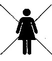
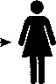
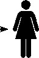

İlişkilerin Çekirdek Dili
Acına, kederine, sahipsiz yaralarına uzaklığın;
partnerine olan uzaklığındır.
- Stephen and Ondrea Levine, Embracing the Beloved
Birçoğumuz için, en büyük özlemimiz sevilmektir ve mutlu bir ilişkimiz olmasıdır. Ancak genellikle ailelerde sevginin bilinçsizce ifade edilmesi nedeniyle, sevme şeklimiz mutsuzluğumuzu paylaşmak veya ebeveynlerimizin ve bü-yükanne-büyükbabalarımızın modellerini tekrar etmek şeklinde olabilir.
Bu bölümde, tatmin edici ilişkiler yaşama becerimizi sınırlandıran bilinçaltı sadakat bağlarımızı ve saklı dinamikleri inceleyeceğiz. Kendimize şu soruyu soracağız: Gerçekten bir partner için hazır mıyız?
Ne kadar başarılı olursak olalım, iletişim becerilerimiz ne kadar harika olursa olsun, yakınlıktan kaçınmakla ilgili modelimizi ne kadar derinden anlamış olsak da aile geçmişimizle iç içe geçmiş bir hâlde olduğumuz sürece en çok sevdiğimiz kişiden kendimizi uzaklaştırırız. Farkında olmaksızın, gerçek kaynak arkamızda uzandığı müddetçe, aile modelimiz olan güvensizlik, muhtaçlık, öfke, geri çekilme, kendini kapatma, terk etme veya terk edilme ve mutsuzluğumuz nedeniyle partnerimizi suçlama modellerini tekrar ederiz.
İlişkilerde yaşanan problemlerin birçoğu o ilişkinin kendisinden kaynaklanmamaktadır. Ailelerimizin bizler doğmadan çok önce deneyimlediği dinamiklerden kaynaklanır.
Örneğin, eğer bir kadın doğum sırasında hayatını kaybettiyse, sonraki nesillerde nedeni açıklanamayan korku veya mutsuzluk dalgaları var olabilir.
Kız çocuklar veya torunlar evlenirlerse çocukları olacağı ve çocukları olmasının ölüme sebep olabileceğini düşündükleri için evlenmekten korkabilirler. Görünüşte, evlenmek istemediklerini veya çocuk sahibi olmak istemediklerini söyleyebilirler. Doğru erkek ile karşılaşmadıklarından şikâyet edebilirler veya düzen kurup yerleşmek için çok meşgul olduklarını söyleyebilirler. Bu şikâyetlerinin altmda, çekirdek dilleri farklı bir hikâye anlatıyor olabilir. Çekirdek cümleleri, aile geçmişiyle etkileşime geçer ve şöyle duyulabilir: "Eğer evlenirsem, başıma bir felaket gelebilir. Ölebilirim. Çocuklarım annesiz kalabilir. Onlar yapayalnız kalırlar."
Aynı ailedeki erkek çocuklar ve torunlar da etkilenebilirler. Önlar da bir eşe bağlanmaktan korkabilirler çünkü cinsel birliktelikleri eşlerinin ölümüne neden olabilir. Onlarm çekirdek cümleleri şu şekilde duyulabilir: "Birini incitebilirim ve bu tamamıyla benim suçum olabilir. Asla kendimi affede-mem."
Bu gibi korkular geçmişlerimizde gizlidir ve davranışlarımızı, yaptığımız ve yapmadığımız seçimlerimizi bilinçaltm-dan yönetebilirler.
Bir defasında birlikte çalıştığımız Seth adından bir erkek, kendisini "insanları memnun edici" kişi olarak adlandırıyordu ve yakın olduğu kişilere karşı yanlış bir şey yapıp onları hayal kırıklığına uğratmaktan çok korkuyordu. Eğer onlar onunlayken mutsuz olurlarsa, onu reddederler ve terk ederler diye korkuyordu. Yapayalnız ölmekten korkuyordu. Arka planda bu korku işlerken, sıklıkla yapmak istemediği şeyleri yapmak ve söylemeyi arzu etmek istemediği şeyleri söylemek durumunda kalıyordu. Hayır demek istediğinde genellikle evet diyor ve sonrasında memnun etmeye çalıştığı kişilere kızgınlık duyarak bir dahaki sefere evet diyeceği yerde hayır diyordu. Çoğu zaman sahte bir yaşam yaşıyordu ve mutsuzluğundan karısmı sorumlu tutuyordu. Bu modelden kaçmaya çalıştığı bir gün, sırf bir sonraki partneri ile bunu yeniden oluşturabilmek için Seth karısını terk etti. Ancak kısa süre sonra Seth bir partner ile huzurlu bir ilişki yaşaması için korkularının ilişkilerinde nasıl tezahür ettiğini fark etti.
Dan ve Nancy
Dan ve Nancy ellili yaşlarında başarılı bir çiftti ve her şeyleri tam gibi görünüyorlardı. Dan büyük bir finans kurumunda CEO, Nancy ise bir hastane işletmecisiydi ve hepsi hayatını iyi sürdüren üniversite mezunu üç çocuğun anne-babası olmaktan gurur duyuyorlardı. Yuvaları boş olduğu için, mutlu bir emeklilik dönemi yaşamaya dair umutları sönmüştü. Evliliklerinde problem yaşıyorlardı. Nancy "altı yıldan fazla bir süredir seks yapmıyoruz. Birer yabancı gibi yaşıyoruz.", dedi. Dan ise yıllar önce Nancy'e karşı cinsel isteğini kaybetmişti ancak tam olarak hangi noktada bunun başladığını bilemiyordu. Dan Nancy ile evliliklerinin sürmesini istiyordu fakat Nancy bu konuda emin değildi. Her ikisi de dini ve inanç temelli evlilik danışmanlıkları almaktan yorulmuştu. Dan ve Nancy'nin ilişkilerinde mücadeleleri çekirdek dil yaklaşımı ile inceleyelim.
Sorun (Çekirdek Şikâyet)
Nancy'nin şikâyetindeki çekirdek dili dinleyin: "Dan'in benimle ilgilenmediğini hissediyorum. Çoğu zaman benden uzak duruyor. Ondan yeterli ilgi göremiyorum ve nadiren kendimi onunla bağlı hissediyorum. Sürekli benden çok çocuklarıyla ilgili görünüyor."
Şimdi de Dan'in çekirdek dilini dinleyelim: "Nancy benden hiç tatmin olmuyor. Her şey için beni suçluyor. Benden, verebileceğimden çok daha fazlasını istiyor."
Görünüşe göre, kullandıkları kelimeler evliliklerde sıklıkla gördüğümüz şikâyet türlerine birer örnek oluşturuyor. Fakat daha derinden incelendiğinde, kelimeleri bizi tatminsizliğe dair incelenmemiş bir kaynağa götüren bir harita oluşturuyor. Dan ve Nancy'nin haritası doğrudan aile sistemlerinde çözümlenmemiş olaya yönlendiriyor.
Bir ilişki probleminde çekirdek dil haritasını bulmak için, tekrardan dört temamıza bakarız ve dört soru sorarız. Sonrasında da ortaya çıkan şeyi derinlemesine dinleriz.
Sorular
1. Çekirdek Şikâyet: Partnerinizle ilgili en büyük şikâyetiniz nedir? Bu soru, başlama noktasıdır. Bu soru ile elde edilen bilgi genellikle ebeveynlerimizden biri ile bitmemiş bir meselemizle ilintilidir. Bu bitmemiş mesele sonradan partnerimize yansır. Erkek veya kadın fark etmez, şu temel kuralın gerçek olduğu görülür: Annemizden alamadığımızı hissettiğimiz ne varsa, onunla ilişkimizde çözülememiş ne kaldıysa, genellikle partnerimizle yaşadığımız şeye zemin hazırlar. Eğer annemizle ilişkimiz mesafeliyse veya onun sevgisini reddettiysek, partnerimizin sevgisinden de kendimizi uzaklaştırmamız muhtemeldir.
2. Çekirdek Tanımlayıcı: Annenizi veya babanızı tanımlamak için kullanacağınız sıfatlar veya kelimeler nelerdir? Bu soru ile bilinçaltı bağlılığını inceleriz ve kendimizi ebeveynlerimizden ayırdığımız açıları görürüz. Ebeveynlerimizi tanımlamak için sıfatlar ve sözcüklerden oluşan bir liste oluşturarak, en derin duygularımızın özüne erişiriz. Orada ise, birçoğumuzun ebeveynlerimize karşı hâlâ duyduğumuz içsel kızgınlıklar ve suçlamaları buluruz. Partnerimize yansıttığımız içsel huzursuzluğumuzun kökeninde yatan çocukluk yaşantılarının depolandığı bu bilinçaltıdır.
Birçoğumuzun ana tanımlayıcıları kendimizi aldatılmış ve tatminsiz hissettiğimiz çocukluk kayıtlarımızdan kaynaklanır. Ebeveynlerimizin bize yeterince bir şey vermediğini hissediyor olabiliriz veya bizleri doğru şekilde sevmediklerini hissedebiliriz. Bu kayıtları taşıdığımızda, hissettiğimiz tatminsizlik yüzünden ebeveynlerimizi suçlarız. Bu durum ilişkilerimizin yola girmesine engel olur. Partnerimizi o eski, çarpık mercekten görürüz ve duyduğumuz derin sevgi ihtiyacının ötesinde
zaten bizi aldatacağını bekleriz.
3. Ana Cümle: En büyük korkunuz nedir? Başınıza gelmesinden korktuğunuz en kötü şey nedir? 8. Bölümde öğrendiğimiz gibi, bu sorunun cevabı ana cümlemizi oluşturur ve çocukluğumuzdan veya aile geçmişimizde çözümlenmeden kalmış bir travmadan yansıyan ana korkumuzu gösterir.
Şimdiye kadar muhtemelen ana cümlenizi belirlemişsinizdir. Ana cümleniz ilişkilerinizi nasıl sınırlandırıyor? Bu sizin bir partnere bağlanma becerinizi nasıl etkiliyor? ikiniz birlikteyken savunmasız durabiliyor musunuz? Ya da incinmekten korkarak kendinizi kapatıyor musunuz?
4. Çekirdek Travma: Aile geçmişinizde hangi trajik olaylar yaşandı? Daha önceki bölümlerde gördüğümüz gibi bu soru sistemik görüşümüzü açmakta ve ilişkilerimizi etkileyen nesilden nesle aktarılan modelleri tanımlamamıza olanak sağlamaktadır. Genellikle çiftlerin yaşadığı problemlerin kaynağı aile geçmişinde bulunur. Evlilikle ilgili yaşanılan acılar ve ilişki çatışmaları bir aile genogrammda birkaç nesil boyunca görülür.
Her bir soru ile ortaya çıkan dramatik ve duygu yüklü sözcükleri dinleriz. Aile travmaları genellikle sözlü dilimizde kendisini ifade eder ve bizi kaynağına götüren önemli tanımlayıcılar ve ipuçları sağlar.
Yapıyı anladığımıza göre, Dan'in ve Nancy'nin çekirdek dillerine bakalım. Seansm ilk birkaç dakikası içinde, birbirlerini suçlama yağmuruna tutulmuşlardı. Artık ebeveynlerini tanımlayışlarım duyma zamanıydı.
Sıfatlar ve Sözcükler (Çekirdek Tanımlayıcılar)
Nancy farkında olmaksızın annesini, Dan'i tasvir ettiğine benzer şekilde tanımladı. "Annem duygusal olarak mesafe-
liydi. Ona kendimi hiç bağlı hissedemedim. Bir şeye ihtiyacım olduğunda ona hiçbir zaman gidemedim. Bunu denediğimde ise, benimle nasıl ilgileneceğini bilmiyordu." Nancy'nin annesi ile bitmemiş olan meselesinin doğrudan Dan'in kucağına düştüğü görülüyordu.
Nancy'nin Dan ile arasındaki bağı etkileyen tek faktör annesiyle çözümlenmemiş ilişkisi değildi. Nancy'nin ailesindeki tüm kadınlar kocalarından memnun değillerdi. Nancy "Annem babamdan hiçbir zaman tatmin olmamıştır." dedi. Bu model ayrıca önceki nesillere de uzanıyordu. Nancy'nin büyükannesi büyükbabasından "işe yaramaz alkolik puşt" diye bahsederdi.
Böyle bir davranışın Nancy'nin annesi üzerindeki etkisini hayal edin. Büyükanne ile yetişmiş olarak, Nancy'nin annesinin Nancy'nin babası ile mutlu olması için zayıf bir ihtimali vardı. Nasıl annesinden daha fazlasma sahip olabilirdi? Nancy'nin babası ile kendisini memnun hissetse bile, Büyükanne Büyükbaba ile o kadar üzüntü yaşamışken Nancy bu mutluluğu annesiyle nasıl paylaşabilirdi? Bunun yerine, bilinçsiz bir biçimde modeli ve Nancy'nin babasını eleştirmeye devam etti.
Dan ise, kendi annesini çok bunalmış ve sinirli olarak tasvir etti. Küçük bir çocukken kendisini annesine bakmakla sorumlu hissetmişti. "Annem benden çok daha fazla şeye ihtiyaç duyuyordu. Çok fazla şey..." diyerek Dan gözlerini aşağıya devirip dizlerinde düzgünce duran ellerine baktı. Dan annesinin depresyon şiddetinin artması sebebiyle zaman zaman hastaneye kaldırılmasını şöyle anlattı: "Babam sürekli çalışırdı. Onun veremediği ilgiyi anneme benim vermem gerektiğini hissettim." Aile geçmişine bakılınca, annesinin neden mücadele ettiği açıkça belliydi. Dan'in büyükannesi annesi henüz on yaşındayken tüberküloz hastalığından ölmüştü. Bu kayıp onu mahvetmişti. Dan'in en küçük kardeşi bebekken öldüğünde büyük kayıp yeniden ortaya çıkmıştı. O sırada, Dan'in annesi altı hafta süresince hastanede yattı ve şok tedavisi gördü. Dan o zamanlar yalnızca on yaşındaydı.
Bir de bunun üstüne Dan babasından kendisini uzak hissediyordu. Dan babasını "zayıf ve aciz" olarak tasvir etti. Daha derinlemesine tasvir ederken Dan "Babam annemle olabilecek bir adam değildi." dedi. Babası UkraynalI bir göçmen işçiydi ve Dan'in annesinden daha düşük bir sosyal sınıftan geliyordu. "O hiçbir zaman ailesindeki erkeklerin seviyesinde olamıyordu, ailedeki diğer erkekler profesyonel meslek sahibi ve eğitimliydi." Dan'in yargılamaları babasıyla arasındaki bağa zarar vermişti.
Ne zaman bir adam babasını reddetse, o farkında olmayarak kendisini erkeklik kaynağından uzaklaştırıyordu. Babasına hayranlık duyan ve saygı gösteren bir adam genellikle erkek gücünde kendini rahat hissediyordu ve babasının özelliklerine imreniyordu.
Bir ilişki içinde bu, rahatlık, bağlılık, sorumluluk ve istikrara dönüşebilir. Aynı şey kadınlar için de geçerlidir. Annesini seven ve saygı duyan bir kadın genellikle kadınlığı konusunda kendisini rahat hisseder ve annesine duyduğu hayranlığı daha çok ifade edebilir.
Dan'in kendisini babasından uzaklaştırmasının bir nedeni daha vardı. Dan annesini sırdaş olarak görüyordu ve farkında olmadan babasına ait olan alana girerek haddini aşmıştı. Dan bu durumu bilinçli bir biçimde seçmemişti fakat annesinin duyduğu ihtiyacı hisseden birçok erkek çocuğu gibi o da annesiyle ilgilenme, bakımını üstlenme görevinin kendisine ait olduğunu hissediyordu. O ilgi gösterdiğinde annesinin yüzünün nasıl aydınlandığını görüyordu ve aynı şekilde babası etraflarında olduğunda ise nasıl gölgelendiğini biliyordu. Annesi tarafından tercih edildiğini hissederek, Dan kendisini babasından üstün hissediyordu.
Hatta babasına karşı annesinin onaylamadığı ve beğenmediği yanlara karşı duygularını da benimsemişti. Babasını reddederek, Dan'in kendi erkeklik gücünden kopuşunun yanı sıra farkında olmadan Nancy ile evliliğinde benzer bir dinamiği tekrar etmek üzere sahne oluşturmuştu. Babası gibi Dan de "zayıf ve aciz" bir koca oldu.
Nancy de benzer şekilde annesinin kadınlık gücünden alamamıştı. Çocukluğunda bir noktada, Nancy annesine destek almak üzere gitmemeye karar vermişti. Nancy çocukluğundaki bu yeterince tatmin olmamış olduğuna dair hissini içinde taşıdı ve ihtiyacı olan ilgiyi sağlamadığı için annesini suçladı. Bu tatminsizlik duygusu ise sonrasında Dan'e yöneldi. Nancy'nin gözünde, Dan de ona ihtiyaç duyduğu desteği sağlamakta başarısız olacaktı.
Dan ve Nancy çocuklarını yetiştirirken ise ailenin ihtiyaçlarına odaklanma konusunun içinde kaybolmaları kolay oldu. Ancak şimdi, çocuklar gidince, altta yatan dinamikler görünür oldu. Dan ve Nancy artık zorlukla bir aradaydı.
Dan kendisini Nancy'e karşı "Cinsel açıdan ölü." şeklinde tasvir etti. "Sekse ilgimi tamamıyla kaybettim.", dedi. Annesiyle olan ilişkisini keşfettiğinde Dan bunun sebebini kolaylıkla anladı.
Annesine ihtiyaç duyduğu ilgi ve teselliyi vermek bir çocuğun sorumluluğu değildir. Bunu küçük bir çocuktan istemek çok büyük bir şeydir. Annesinin ihtiyacı olan şeyi bir çocuk hiçbir zaman veremez. Onun acısını tamamıyla gideremez. Aksine, annesinin sevgisi onu boğuyordu ve ihtiyaçları bunaltmıştı.
Dan Nancy'nin ondan çok fazla şey istediğinden şikâyet ettiğinde, aslında bahsettiği kişi Nancy değildi. Bilinçaltın-dan, annesinin karşılanamayan ihtiyaçlarından bahsediyordu. Dan çocukken hissettiği o ağ gibi saran yakınlıkla Nancy ile olan yakınlığını karıştırmıştı. Naneydin doğal istekleri ve ihtiyaçları bile dirençle karşılanıyordu. Kendisini korumak için Dan Nancy'e karşı kendisini kapatıyor ve otomatik olarak her talebine hayır diyordu, gerçekten evet demek istediği durumlarda bile...
Dan'in ve Nancy'nin problemleri eşzamanlı biçimde birbirine geçiyordu. Her ikisi de evlilikleri aracılığıyla kendilerini iyileştirmeleri için bir araya getirilmişlerdi. İnsanlar genellikle farkında olmadan yaralarmı tetikİeyecek bir eş seçerler. Böylelikle, kendilerinin acı dolu ve tepkili taraflarını görme, sahiplenme ve iyileştirme fırsatları olur. Mükemmel bir ayna gibi, seçilen partner diğerinin kalbindeki sahiplenilmemiş ve bitirilmemiş şeyleri yansıtır. Nancy'nin annesiyle tamamla-yamadığı ve bitiremediği meselesine yardımcı olmasına ihtiyaç duyduğu duygusal açıdan uzak sevgiyi Dan'den başka kim daha iyi sağlayabilirdi? Ve Dan'e annesiyle çocukken yaşadığı o doyumsuz ihtiyaç hâlinin yarattığı yarayı iyileştirmesi için Nancy'den başka kim fırsat sağlayabilirdi?
En Büyük Korku (Ana Cümle)
Dan hayattaki en büyük korkusunun Nancy'i kaybetmek
olduğunu söyledi. "En büyük kâbusum en çok sevdiğim insanı kaybetmek olurdu. Nancy'nin öleceğinden veya beni terk edeceğinden ve onsuz yaşamak zorunda kalacağımdan korkuyorum." Bir önceki nesilde, bu ana cümlenin yankısı, Dan'in on yaşındayken annesini kaybettiğinde hissettiği acı olabilir. Dan'in annesi de "en çok sevdiği kişiyi kaybetme" deneyimini yeni doğan bebeği öldüğünde tekrarlamıştı. Bu kayıplar Dan'in en büyük korkusunda aynalanıyor olabilirdi.
Dan bu korkuyu taşımıştı, aslmda en çok sevdiği insanlar olmadan yaşamaktan korkan kişi annesiydi. Dan ana cümlesinin esasen annesinden kaynaklandığını hızla farkına vardı.
Model bir sonraki nesilde devam etmişti. Dan'in annesi kendi annesi öldüğünde tıpkı Dan'in "en çok sevdiği insanı" altı hafta boyunca annesi "sinir krizi" sebebiyle hastanede yattığında kaybettiğindeki gibi, on yaşmdaydı. Daha öncesinde de, annesi depresyona girdikçe Dan'in üzerindeki ilgisinde kopukluklar olduğunu hatırlıyordu. O zamanlar sırasında Dan kendisini terk edilmiş ve yapayalnız hissediyordu.
Nancy'nin ana cümlesi de daha önceki bir zamana dayanıyordu. "Berbat bir evlilik içinde sıkışabilirim ve kendimi yalnız hissedebilirim." Bu cümle açıkça Nancy'nin alkolik büyükbabasıyla evli olan büyükannesine aitti ve ailede yanlış giden her şey için o suçlanmıştı. Eğer bir nesil öncesine bakarsak, Nancy'nin büyükannesinin annesiyle zor bir ilişkisi olduğunu görebiliriz veya büyük büyükannenin kocasıyla kötü bir evliliği olduğunu görebiliriz. Maalesef, büyükanneden ötesine dair tüm bilgiler tarihe karışmıştı. Her bir nesilde, annesinden kopmuş veya birbirlerinden kopuk ebeveynler tarafından büyütülmüş küçük bir kız göreceğimiz muhtemeldi. Bunu anladıktan sonra, Nancy bu modeli Dan ile tekrarlamaya devam edebilirdi veya iyileştirme fırsatını yakalayabilirdi. Nancy iyileşmek için hazırdı.
Aile Geçmişi (Çekirdek Travma)
Sistemik düzeyde, Dan babasının evliliğinde hissettiği erkeklik gücünün zayıflaması duygularım paylaşarak babasının deneyimlerini tekrar etti. Nancy kocasıyla "tatminsiz" hissederek annesinin ve büyükannesinin deneyimlerini tekrarladı. Haydi, şimdi de onların aile sistemlerine bakalım.
DAN’İN AİLE SİSTEMİ

Büyükanne
(Anne 10 yaşındayken ölmüş)

Anne
"Benden çok fazla şey bekledi."
¥ ** Baba
"Zayıf bir adamdı."
t—‘t
Dan Nancy
"Zayıf bir adam "Nancy benden çok
gibi hissediyor. “ fazla şey bekliyor."
:p
Seninle Başlamadı
NANCY’NİN AİLE SİSTEMİ
Üç Nesil Yaşanan Tatminsizlik

Büyükanne
“Tatmin edilemezdi."
l||l <r
Büyükbaba
"Alkolikti."
!“t
Baba "Yeterli değildi." | 1 | r | Anne "Tatmin edilemezdi. " |
t— | f | "Annem benimle yeterince ilgilenmedi." | |
Dan | Nancy | ||
Benimle yeterince ilgilenmiyor." | "Tatminsiz." | ||
Büyük Resim
Dan ve Nancy'nin aile geçmişlerinin gösterdiği gibi, ilişki çatışmaları genellikle partnerlerimizle sahneye gelmeden çok önce harekete geçmektedir.
Nancy "tatminsizlik" duygusunun kaynağının Dan olmadığım görebildi. Bu duygu annesiyle çok zaman önce oluşmuştu; Dan de aynı şekilde kadınların kendisinden "çok şey talep ettiği"ne dair duygusunun kaynağının Nancy olmadığını görebildi. Bu duygu da kendi annesiyle çok zaman önce oluşmuştu.
Ayrıca Nancy ailesine giren her erkeğin kadınlar tarafından beğenilmediğini fark etti. Mevcut şekliyde, Dan evliliğe ait tatminsizlik yaşanan üç neslin arasında bunu elden eden kişi hâline geldi.
İkisinin de bitmemiş meselelerini ilişkilerine taşımış olduklarını fark ettikten sonra, büyü bozuldu ve suç bulutu dağılmaya başladı. Zamanmda birbirlerine yönlendirdikleri yansıtmalar ve suçlamalar artık aile geçmişlerinin daha büyük kapsamında anlaşılıyordu. Büyük resim ortaya çıktıkça, kendi tatminsizlik duygularının diğeri sebebiyle olduğuna dair birbirlerini sorumlu tuttukları illüzyon yok olmaya başladı.
Hemen birbirlerine yeni bir gözle bakmaya başladılar. Dan ve Nancy onları en başta bir araya getiren sıcak duygularım yeniden keşfedebiliyorlardı. Birbirlerine daha nazik ve cömert davranmaya başlamalarının yanı sıra yeniden seks yapmaya başladılar.
Yeni Resmi Genişletmek
Nancy'nin annesine duyduğu şefkat de derinleşmeye başlıyordu. Küçük bir kız iken, evliliğinde mutsuz olan annesiyle duygusal açıdan ilgileniyordu. Büyükannenin sahip olduğundan daha fazlasına sahip olmaya kendisine izin vermeyen Nancy'nin annesi mutsuz evlilik döngüsünü tekrar ediyordu.
Nancy'nin hatırladığı eski anılarda, annesi uzak ve ilgisiz görünüyordu. Küçük bir kız iken Nancy kendisini annesi tarafından reddedilmiş hissediyordu. Aile geçmişini bütün olarak ele aldığımızda Nancy annesine yeni bir bakış açısıyla bakabildi. Annesinin uzak olsa bile, Nancy'ye ihtiyacı olan her şeyi verebilmiş olduğunu hissetti. Nancy bunu anladıktan sonra annesine karşı yumuşayabildi.
"Annelik" bakımından aldatılmış olduğuna dair sahip olduğu eski içsel görüntülerin ötesine geçebildi. Onun yerine, annesi tarafından rahatlatıldığma dair yeni bir görüntü yerleşti. Bu duygunun onun içini doldurduğu görünüyordu. Yeni görüntüsünde ise annesinin ona karşı sadece sevgi dolu yaklaşımları vardı.
Annesi on altı sene önce ölmüş olmasına rağmen, Nancy, annesi yaşarken sormak aklına bile gelemeyecek olan desteği ondan isteyebildi. Hatırlayabildiği kadarıyla ilk kez Nancy annesinin sevgisini hissedebiliyordu.
Gözlerini kapadı ve annesinin ona arkasından sarıldığım hayal etti ve ağlayarak şunları söyledi, "Anne, seni hep bana yeterince ilgi göstermediğin için suçladım ve Dan'i de aynı nedenle suçluyordum. Şimdi bana sahip olduğun her şeyi verebildiğini anlıyorum. Anne bu yeterliydi. Gerçekten ye-terliydi." "Anne, lütfen Dan ile mutlu olabilmem için bana dua et. Büyükannem ve sen olamamış olsanız bile, ben evliliğimde kendimi tatmin olmuş hissetmek istiyorum. Bugünden itibaren, ne zaman kendimi tatmin olmamış ve yalnız hissetsem sana uzanacağım ve seni arkamda hissedeceğim, beni desteklediğini ve benim için en iyisini istediğini hissedeceğim."
Birkaç hafta boyunca, Nancy annesinin bir fotoğrafını yatağının yanma koydu ve uykuya dalarken geceleri annesinin ona sarıldığını hayal etti. Annesinin kolları arasında yattığını ve ihtiyaç duyduğu tüm sevgiyi aldığını hayal etti. Nancy küçük bir kız iken alamadığı ne varsa artık hissedip alabiliyordu. Annesinin sevgisiyle kucaklanmış olarak artık Dan'e bütünüyle yeni biri olarak dönebilirdi.
Dan de aynı şekilde ölen annesiyle konuştuklarını hayal etti: "Anne, ben küçükken seninle ilgilenmek zorunda olduğumu düşündüm. Bu konuda kızgınlık duyuyorum. Bunu ikimiz de fark etmemiştik fakat ben senin annen sen küçükken öldüğü için bu durumu telafi etmeye çalışıyordum. Bu benim için çok fazlaydı. Hiçbir zaman kendimi neden yeterli hissetmediğimi merak etmemiştim. Bunun gibi bir kaybı küçük bir erkek çocuğu telafi edemezdi."
Dan'in içsel görüntüsünde, Dan annesinin onu geri adım atarak ona daha çok alan vererek cevaplandırdığını hissediyordu. Dan nefes verdi ve ardından akciğerlerinin büyüklüğü iki katma çıkar gibi derin bir nefes aldı. Bedeninde bu kadar çok nefese alışık olmadığı için başlangıçta Dan'in başı döndü ve sonrasında kendisini enerjik hissetti ve şöyle devam etti: "Anne, ben sıklıkla Nancy'nin benden çok fazla şey istediğini hissediyorum. Lütfen. Nancy'nin bana ihtiyaç duyduğu zaman yok olacağımdan veya yeterli olmayacağımdan duyduğum korku olmadan, Nancy'yi olduğu gibi görebilmem için bana yardım et."
iyileşmeye duyduğu isteği devam eden Dan hâlâ hayatta olan babasıyla da iletişim kurdu. Dan babasına onunla uzak oldukları için üzgün olduğunu anlattı. Babasını öğlen yemeğine götürdü ve ona onunla yakın olmak istediğini söyledi. Öğle yemeği sırasında, Dan babasına harika bir baba olduğu için teşekkür etti. Babası bu sözlerin ardından çok duygulandı. Dan'e uzun zamandır bu konuşmanın olması için beklediğini söyledi. Dan daima orada olmuş olan sevgiyi hissedebiliyordu. Şimdi bu sevgiyi almaya hazırdı.
Nancy Dan'deki yeni gücü hissedebiliyordu. Hatta boyu daha uzun gibi göründü. Nancy'nin cevabı otomatikti: "Artık Dan'e saygı duyuyorum."
Nancy Dan'den yardım istedi: "Suçladığımı, eleştirdiğimi veya memnuniyetsiz olduğumu hissettiğin zaman lütfen bunu bana söyle. Bunu içimde fark etmeye çalışacağıma söz veriyorum. Sana daha iyi bir eş olmak istiyorum." Dan bir derin nefes daha aldı. Bu nefes bedenini yeni bir biçimde doldurdu, küçük bir erkek çocuğuyken kapattığı yerlere doğru yayıldı.
Buna karşılık Dan de Nancy'den ona yardım etmesini istedi: "Duygusal açıdan uzak olduğum zaman lütfen bunu bana söyle. Bunu kendim gözlemleyip görmeye çalışacağıma ve senden kaçmayacağıma söz veriyorum." Nancy aym şekilde bir nefes aldı. İkisi de aynı anda tutmak üzere birbirlerine ellerini uzattılar.
Dan ve Nancy'nin durumu, belli bazı sorular sorarak ve çekirdek dil yapışım anlamak üzere dinleyerek en derin ilişki çatışmalarımızın kaynağına erişebileceğimizi göstermektedir. Tıpkı Dan ve Nancy'nin her ikisinin de yaralarının birbirleri tarafından aynalandığı ve büyütüldüğü gibi bizler de partnerlerimize bakarak aile geçmişimizde bitiremediğimiz hangi meselelerimizin olduğunu ve hangilerini ilişkimize getirdiğimizi görebiliriz. Harita zaten bizim içimizdedir. Belki yolu karanlıkta kalmış olabilir ancak genellikle bize ışık sağlamaları için partnerlerimize güveniriz.
Partnerlerin Ötesine Bakmak
İlişkilerimizdeki şikâyetlerin çekirdek dil yapısını keşfettiğimizde genellikle bize tanıdık gelen bir aile hikâyesi bağlantısı buluruz.
Şikâyetlerimize görünürdeki değerine göre bakmak yerine, kendimize şu soruyu sormamız gerekir: Ebeveynlerimiz veya büyükanne/büyükbabalarımız benzer deneyimlere sahipler mi? Partnerimize de ebeveynlerimize karşı hissettiğimiz duygulara benzer duygular mı hissediyoruz?
İlişkim, Aile Geçmişimdeki Bir Modeli Mi Yansıtıyor?
Eğer partnerinizle zorluklar yaşıyorsanız, sorunun doğrudan partnerinizden kaynaklandığı sonucuna varmayın. Bunun yerine, şikâyetlerinizde kullandığınız kelimeleri partnerinizi suçlamadan veva duygularınıza kapılmadan dinleyin. Kendinize şunu sorun:
• Bu kelimeler tanıdık geliyor mu?
• Annem veya babamla ilgili sahip olduğum şikâyetle aynı şeyden mi şikâyet ediyorum?
• Annemin veya babamın birbirleri hakkında aynı şikâyetleri var mıydı?
• Büyükannem veya büyükbabam benzer şekilde mi mücadele etmişti?
• İki veya üç nesil arasında bir paralellik var mı?
• Partnerimle yaşantım, küçük bir çocukken ebeveynlerimle ilgili hissettiklerimi yansıtıyor mu?
Tyler’ın Hikâyesi
Tyler, atletik bir yapılı, yirmi sekiz yaşında bir eczacıydı ve karısı Jocelyn'i çok seviyordu. Üç yıldır evlilerdi ancak düğünlerinden beri sadece iki defa cinsel ilişki yaşamışlardı. Evliliklerinden önce, sık sık seks yaparlardı. Düğünlerinde yemin ettiklerinden beri Tyler kendisini endişeli ve tedirgin hissediyordu. Karısının onu başka bir adam için terk edeceğinden emindi. "Altı ay içinde beni aldatacaksın." diyordu. Jocelyn ise devamlı olarak ona sadık olduğu konusunda Ty-ler'ı inandırmaya çalışıyordu fakat Tyler bunu duyamıyor-du. Jocelyn'in ona sadakatsiz olacağına dair ısrarı ilişkilerini yıpratıyordu. İlk seansımızda bana, "Bundan kesinlikle eminim." dedi. "Jocelyn beni aldatacak ve ben mahvolacağım."
Düğünden beri Tyler ereksiyon bozukluğu ile mücadele ediyordu. Tıbbi testler sağlıklı olduğunu ve fiziksel açıdan bir problemi olmadığım doğruluyordu. Tyler aradığı cevabın onun için anlaşılması güç olduğunu biliyordu. Sadece nereye bakması gerektiğini bilmiyordu. Çekirdek cümlesi ise bir harita işlevini görerek onu gitmesi gereken yöne yönlendirdi.
lyier’ın Çekirdek Cümlesi: "Karım beni aldatacak ve ben mahvolacağım." Tyler farkında olmasa da, bu çekirdek cümlenin sahibi değildi. Bu acı dolu mantra ailesinin geçmişinde kırk yıl önce yankılanmıştı, Tyler ise bu hazin olaydan haberdar değildi.
Tyler'm babası ilk karısıyla bir yıldan daha az süredir evliyken karısı başka bir adamla cinsel birliktelik yaşamış, onu aldatmıştı. Yaşadığı şok kaldırabileceğinden fazlaydı. Babası kasabadan ayrıldı, işini bıraktı, arkadaş çevresinden ayrıldı ve ne olduğu hakkında hiçbir zaman konuşmadı. Tyler bunların hiçbirini bilmiyordu. Bunları kendi belirtileri ortaya çıktığında öğrendi ve benim teşvik etmem üzerine babasına Tyler'm annesiyle evlenmeden önce başka bir ilişkisi olup olmadığını sordu. Bir sonraki seansımızda Tyler, bu soruyu sorduğunda babasının bir an için nefesini tuttuğunu ve dişlerini sıkarak dudaklarını kapattığını anlattı. Bu bana babasının âdeta kelimenin tam manasıyla geçmişinin ağzından kelimelerle dökülmemesi için çabaladığı hissini uyandırdı. Buna rağmen, sonunda ilk karısından bahsetti.
Geçen zaman, aradaki mesafe ve tekrar evlenmesine rağmen babasının kırık kalbi hiçbir zaman iyileşmemişti. Babasının kalbinde çözümlenmeden kalan ne varsa şimdi Tyler'm evliliğini etkiliyordu. Babası ile yaşadığı acı hakkında hiç konuşmamasına rağmen duygular Tyler'm bedeninde çok canlıydı. Tyler bilmeden babasımn travmasını devralmıştı.
Bunu anlamanın getirdiği aydınlanma tüm bedenini âdeta derin bir uykudan uyandırdı. Artık Jocelyn ile seks yapmak isterken bedeninin neden donup kaldığını anlıyordu. Sonunda bedeninin kendini kapatışının ardındaki bilgiyi anlamıştı. Cinsel iktidarsızlık arzuladığı aşkından onu uzaklaştırmıştı. Görünürde, bu mantıksız gibi görünse de daha derin bir düzeyden bakıldığında, Tyler Jocelyn'in onu incitmesinden korktuğunu anladı.
Jocelyn ile cinsel ilişki yaşayamayarak, Tyler bilinçdışı bir biçimde kendisini muhtemel herhangi bir ihanetten koruyordu. Tıpkı babasının ilk karısına karşı "yeterince iyi olmaması" gibi, Tyler, Jocelyn'e karşı "yeterince iyi olmama" fikrini kaldıramıyordu. Ereksiyon bozukluğu onu aynı reddedilişi yaşamasından uzakta tutuyordu. Jocelyn tarafından reddedilme düşüncesi Tyler'm uğramayı reddettiği bir yerdi. Kendi güvensizliği içinde neredeyse kendini reddetmesine sebep oluyordu.
Tyler'm ihtiyacı olan tüm şey bu bağlantıyı kurmaktı. Jo-celyn'in onu gerçekten sevdiğini ve tüm cinsel problemleri boyunca onun yanında olduğunu görebildi. Babasının duygularını kalıtsal olarak almış olmasına rağmen, Tyler bunları tekrardan yaşamak zorunda olmadığını anladı. Babasının kâbusu onun başına gelmek zorunda değildi.
Aşk
Antik çağ şairi Virgil, "Aşk her şeye üstün gelir", demiştir. Eğer aşkımız yeterince büyükse, ilişkimiz ne kadar zor olsa da kesinlikle başarılı olacaktır. Beatles da bizlere şunu söyler, "İhtiyacın olan tek şey aşktır." Ancak bilinçaltmdaki pek çok sayıdaki sadakat bağı yaşamlarımızda görünen yüzeyin altından görünmez bir biçimde işlemektedir ve bilinçdışı sevginin (ailelerde ifade edilmiş bilinçdışı sevgi) partnerimizle sevgi dolu bir ilişki sürdürme becerimizi "baskılayabilir" olduğunu söyleyebiliriz. Aile geçmişimizin görünmez bağlarını çözmeyi öğrendiğimizde ise onların bizim üzerimizdeki etkilerini ortaya çıkarabiliriz. Çekirdek dilimizi deşifre etmek de bunu mümkün kılmaktadır. Görünmez olanı görünür hâle getirerek, sevgi alma verme konusunda daha özgür oluruz. Şair Rilke bir ilişkiyi sürdürmenin zorluğunu anlamıştır ve şunları yazmıştır: " insan olarak bir başkasını sevmemiz, belki de yükümlü kılındığımız en çetin, en ağır bir görev, en büyük sınanma ve sınav, bütün ötekilerin yalnızca hazırlık oluşturduğu bir çalışmadır."1
Partnerimizle yakınlığımızı sarsan yirmi bir aile dinamiği aşağıdadır. Bu dinamiklerden bazıları bizleri bir ilişkiye girmekten bile alıkoyabilmektedir.
İlişkileri Etkileyebilen Görünmez Yirmi Bir Dinamik
1. Annenizle zor bir ilişkiniz vardı. Annenizle aranızda bitmemiş olan ne varsa partnerinizle ilişkinizde tekrar etmesi muhtemeldir.
2. Ebeveynlerden birini reddediyor, yargıbyor veya suçluyorsunuz. Ebeveynlerin birinde reddettiğiniz duygular, özellikler ve davranışlar bilinçdışı bir biçimde sizin içinizde var olmaya devam edebilmektedir. Bu ebeveyn hakkmdaki şikâyetlerinizi partnerinize yansıtabilirsiniz. Ayrıca reddedilen ebeveynin sahip olduğu özelliklere benzer özelliklerde bir partner seçmeniz de olasıdır. Bir ebeveyni reddettiğinizde, bu reddedişi ilişkilerinizde mücadele ederek dengelemeye çalışabilirsiniz. Partnerlerinizi terk edebilirsiniz veya onlar tarafından terk edilebilirsiniz. İlişkileriniz anlamsız gelebilir veya yalnız olmayı seçebilirsiniz. Aynı cinsten ebeveynimizle sahip olduğumuz yakm bağm bir partnere bağlanma kapasitemizi kuvvetlendirdiği görülmektedir.
3. Ebeveynlerden birinin duyguları ile birleştiniz. Eğer ebeveynlerden biri diğerine karşı negatif duygular besliyorsa, sizin bu duyguları kendi partnerinize karşı devam ettirme ihtimaliniz vardır. Bir partnere karşı hissedilen tatminsizlik nesilden nesle aktarıla-bilmektedir.
4. Annenizle bağınızda erken bir kopuş yaşadınız. Bu
dinamik ile bir partnerle yakm bir ilişki kurma teşebbüsünüzde bir derece kaygı ve endişe yaşamanız muhtemeldir. Genellikle bu kaygı/endişe ilişki derinleştikçe artar. Kaygmm/endişenin yaşanılan erken bir kopukluktan kaynaklandığının farkında olmaksızın, partnerinizde kusurlar bulmaya başlayabilirsiniz veya kendinizi bu yakınlıktan uzaklaştırmak için çatışmalar yaratabilirsiniz. Ayrıca kendinizi ilgiye muhtaç, ilgi meraklısı, kıskanç veya güvensiz hissedebilirsiniz. Ya da tam tersine, bağımsız görünebilirsiniz ve ilişkilerinizde fazla bir şey talep etmezsiniz. Belki de ilişkilerden büsbütün kaçınabilirsiniz.
5. Ebeveynlerden birinin duygularının sorumluluğunu üstlendiniz. En ideali ebeveynlerin vermesi, çocuklar almasıdır. Fakat üzgün, depresif, endişeli veya güvensiz bir ebeveyni olan birçok çocuk için, odak daha çok ebeveynleri rahatlatmak ve onlardan sevgi ve ilgi almayı geciktirmektir. Böyle bir dinamikte, çocuğun ihtiyaçlarınm karşılanması ikinci planda kalabilmektedir ve kendi içgüdüsel duygularına erişimi ilgi almaktansa vermeye dair alışkanlığa bağlı dürtü tarafından gölgede kalabilmektedir. Yaşamın sonraki dönemlerinde ise, bu çocuk partnerine çok fazla kendinden verebilir ve ilişkiyi gerginleştirebilir. Veya tam tersi de geçerli olabilir. Partnerinin ihtiyaçları sebebiyle kişi bunalmış ve yük altında kalmış hissederek, ilişki geliştikçe içerleyebilir veya duygusal olarak engellenmiş hissedebilir.
6. Ebeveynleriniz birlikte olmaktan mutsuzdu. Eğer ebeveyniniz ilişkilerinde mücadele vermiş veya iyi anlaşamamışlarsa, sizin kendinize onların sahip olduğundan daha fazlasına sahip olma izni vermemeniz olasıdır. Ebeveynlerinize duyduğunuz bilinçdışı bağlılık, onların asıl isteğinin sizin mutlu olmanız olduğunu bilmenize rağmen, sizi onların olduğundan daha mutlu olmanızdan alıkoyabilir. Canlılık ve neşenin eksik olduğu bir ailede çocuklar mutlu oldukları zaman kendilerini suçlu veya rahatsız hissedebilmektedirler.
7. Ebeveynleriniz bir arada kalmadı. Eğer ebeveynleriniz bir arada kalmadıysa, siz de bilinçdışı bir biçimde ilişkinizi bırakabilirsiniz. Bu, onlarm ayrıldığı yaşa geldiğiniz zaman, ilişkide onlarla aym süre geçirdiğinizde veya çocuğunuz sizin ebeveynleriniz ayrıldığında olduğunuz yaşa geldiğinde meydana gelebilir. Ya da ilişkinizde bir arada kalırsınız fakat duygusal açıdan ayrı yaşarsınız.
8. Ebeveyniniz veya büyükanne/büyükbabanız eski partnerlerini terk etti. Babanız veya büyükbabanız ilişkilerinin evliliğe gideceğine inanan daha önceki bir partnerinden veya karısından ayrıldıysa siz de kız çocuk veya torun olarak o kadın gibi yalnız kalarak bedelini ödeyebilirsiniz. Babanız veya büyükbabanız için yeterince iyi olamamış olan bu kadın gibi siz de kendinizi "yeterince iyi değilmiş" gibi hissedebilirsiniz.
9. Annenizin büyük aşkı kalbini kırdı. Siz bir çocuk olarak bilinçdışı bir biçimde annenizin kalp kırıklığına dâhil olabilirsiniz. İlk aşkınızı kaybedebilirsiniz veya annenizin açışım taşıyabilirsiniz ya da (tıpkı onun gibi) mükemmel olmadığınız ve yeterince iyi olmadığınız duygusuna kapılabilirsiniz. Hiçbir zaman istediğiniz partnerle birlikte olamadığınızı hissedebilirsiniz. Bir erkek çocuk olarak, enerjisel açıdan bu ilk aşkın yerine geçmeyi deneyebilirsiniz ve annenize bir partner gibi olabilirsiniz.
10. Babanızm büyük aşkı kalbini kırdı. Siz bir çocuk olarak bilinçdışı bir biçimde babanızın kalp kırıklığına dâhil olabilirsiniz. Siz de ilk aşkımzı kaybedebilirsiniz veya babanızın aşk acısını taşıyabilirsiniz ya da (tıpkı onun gibi) mükemmel olmadığınız ve yeterince iyi olmadığınız duygusunu taşıyabilirsiniz. Bir kız çocuk olarak ise enerjisel açıdan bu ilk aşkın yerine geçmeyi deneyebilirsiniz ve babanıza bir partner gibi olabilirsiniz.
11. Ebeveyniniz veya büyükanne/büyükbabanız yalnız
kaldı. Eğer ebeveynlerinizden veya büyükanne/ büyükbabanızdan biri terk edildikten sonra veya eşinin ölümünden sonra yalnız kaldıysa, siz de yalnız kalabilirsiniz. Eğer bir ilişki içindeyseniz, bir tartışma veya mesafe yaratırsınız böylelikle siz de kendinizi yalnız hissedersiniz. Sessiz bir bağlılıkla bilinçdışı bir biçimde bu yalnızlığı paylaşmanın bir yolunu bulursunuz.
12. Ebeveyniniz veya büyükanne/büyükbabanız evliliğinde acı çekti. Örneğin, büyükanneniz sevginin olmadığı bir evlilik içinde sıkışıp kaldıysa veya büyükbabanız öldüyse, alkolikse, kumarbazsa veya büyükannenizi çocukları büyütme konusunda yalnız bırakıp terk ettiyse, siz de kız torun olarak farkında olmaksızın bu deneyimleri evli olmakla iliş-kilendirebilirsiniz. Ya büyükannenizin deneyimini tekrar edersiniz ya da aynı şeyin sizin de başınıza gelebileceğinize dair duyduğunuz korku ile bir partnere bağlanmaya direnç gösterebilirsiniz.
13. Ebeveyniniz diğer ebeveyniniz tarafından küçük düşürüldü veya saygısızlık gördü. Siz bir çocuk olarak partneriniz tarafından saygısızlığa maruz kalarak bu ebeveynin deneyimini tekrar yaratabilirsiniz.
14. Ebeveyniniz genç yaşta öldü. Çocukluğunuzda ebeveynlerinizden biri öldüyse ölen ebeveyninizle aynı yaşa eriştiğinizde, ilişkinizde aynı yıl süresini doldurduğunuzda veya çocuğunuz siz ebeveyninizi kaybettiğinizde olduğunuz yaşa ulaştığında kendinizi partnerinizden fiziksel veya duygusal açıdan uzaklaştırabilirsiniz.
15. Ebeveynlerinizden biri diğerine kötü davrandı. Eğer babanız annenize kötü bir şekilde davrandıysa, erkek çocuk olarak siz de partnerinize benzer şekilde kötü davranabilirsiniz böylece babanız tek başına "kötü adam" olmayacaktır. Kız çocuk olarak ise size kötü davranan veya kendinizi mesafeli hissedeceğiniz bir partner seçebilirsiniz. Annenizden daha mutlu olmak sizin için zor olacaktır.
lö.Daha önceki bir partnerinizi incittiniz. Eğer daha önceki bir partnerinizi fena hâlde incittiyseniz, farkında olmaksızın bu incitmeyi yeni ilişkinizi sabote ederek dengelemeye çalışabilirsiniz. Yeni partneriniz ise bilinçdışı bir biçimde sizden benzer bir davranış görebileceğinin farkında olarak sizden bir nebze kendisini uzak tutabilir.
17. Çok fazla sayıda partneriniz oldu. Eğer çok fazla sayıda partneriniz olduysa, bir ilişkide bir partnere bağlanma becerinizi tüketebilirsiniz. Ayrılıklar daha kolay hâle gelebilir. İlişkileriniz derinliğini kaybedebilir.
18. Kürtaj oldunuz veya çocuğunuzu evlatlık verdiniz.
Suçluluk, vicdan azabı veya pişmanlık duygusu ile bir ilişki içinde kendinize mutlu olma izni vermeyebilirsiniz.
19. Annenizin sırdaşıydınız. Bir erkek çocuk olarak, an-
nenizin karşılanmamış ihtiyaçlarım karşılayarak ve babanızdan alamadığı hisleri ona vermeye çalışarak onu tatmin etmeye gayret edebilirsiniz.
20. Babanızın gözdesiydiniz. Anhesindense babasına daha yakın olan bir kız çocuğu genellikle seçtiği partnerlerle tatmin olduğunu hissedemez. Bu problemi kökeni partner değildir, kızm annesine duyduğu mesafedir. Bir kadının annesiyle olan ilişkisi partneriyle ilişkisinin ne kadar tatmin edici olacağını gösteren bir işaret olabilir.
21. Ailenizde bir kişi hiç evlenmedi. Kendinizi, hiç evlenmemiş olan bir ebeveyn, büyükanne/büyükbaba, hala/teyze, amca/dayı veya büyük abla/ağabey ile özdeşleştirmeniz olasıdır. Belki bu kişi küçümsendi, alay edildi veya diğer aile bireylerinden daha az şeye sahip gibi algılanmış olabilir. Bilinçdışı bir biçimde ittifak oluşturarak siz de evlenmeyebilirsiniz.
Bölüm 13
Başarı Dili
Dans eden bir yıldız doğurabilmesi için insanın içinde kaos olmalıdır.
- Friedrich Nietzsche, Böyle Buyurdu
Zerdüşt
Kişisel gelişim kitaplarının çoğu, yazarın belirttiği planı takip etmemiz kaydıyla bizlere finansal başarı ve memnuniyet vaat eder. Etkili alışkanlıklar geliştirmek, sosyal çevremizi genişletmek, gelecekteki başarımızı gözümüzde canlandırmak ve para mantraları tekrar etmek gibi stratejiler başarıya giden yollar olarak lanse edilir. Peki ya ne yaparsak yapalım ve hangi planı takip edersek edelim hiçbir zaman hedeflerini başaramadığı görülen bizler için durum nedir?
Başarıya yönelik girişimlerimiz bariyerlere ve çıkmaz sokaklara çarptığında aile geçmişini incelemek izlenmesi en önemli olan doğrultudur. Ailelerimizdeki çözümlenmemiş travmatik olaylar başarının bize akışını ve bunu ne kadar iyi bir şekilde alabildiğimizi belirler. Başarısız olmuş veya aldatılmış veya birini aldatmış olan bir kişi ile bilinçdışı bir biçimde kendimizi özdeşleştirmekten, hak edilmemiş bir mirasa sahip olmak, bir anneden erken yaşta ayrılmanın travmasını yaşamaya kadar uzanan dinamiklerim tümü kendimizi güvende ve finansal açıdan aktif hissetme becerimizi etkileyebilir. Bu bölümün sonunda aile geçmişinizde olan ve size engel oluşturan herhangi bir çekirdek travma olup olmadığını fark etmenize yardımcı olabilecek soru listesi bulacaksınız. Yanı sıra, kendi başarısızlık korkunuzun etrafındaki çekirdek dilin yapısını nasıl çıkaracağınızı ve hayatınızı nasıl tekrar rayına oturtabileceğinizi öğreneceksiniz.
İlk olarak, başkalarının daha başarılı olabilmek amacıyla kendilerini özgürleştirmek için çekirdek dil yaklaşımını nasıl kullandıklarına bakalım.
Aile Geçmişindeki Hataların Bedelini Ödemek
Ben'in hukuk stajını bitirmesine bir hafta kalmıştı. Çalışmasını kâra çevirmek üzere yaptığı bir dolu girişimden sonra başarısız olmuştu ve temelli olarak bırakmak üzereydi. Bana şöyle dedi: "Yalnızca yaşamımı sürdürebilecek kadar miktarda para kazanma seviyesinin ötesine geçemiyorum. Zar zor geçiniyorum."
Ben’in Çeldrdek dili: "Yalnızca yaşamımı sürdürebili-yorum. Zar zor geçiniyorum." Ben tüm yetişkinlik dönemi boyunca deneyimlediği bir yaşam kalıbını tasvir etti. Başını kaşıyacak vakti olmayan, aynı anda bir sürü değişik işle uğraşan, sırada bekleyen bir sürü müvekkili olan biriyken birdenbire dibe vurmuştu. "Kazandığım hiçbir şeyi tutamıyorum. Zar zor yaşamımı sürdürüyorum." Ben'in çekirdek dilini dikkatle dinlediğinizde, muhtemelen bir başkasının ağlayışım duyabilirsiniz, bu fakirleşmiş, "zar zor hayatta kalıp yaşamını sürdüren" ve "zar zor geçinen" biriydi. Tabi ki de soru şuydu: Kim?
Çekirdek dil yolu ile doğrudan problemin kökenine gidebiliriz. Ben çocukluğunda Florida'ya seyahatlerini hatırladı. Ben'in büyükbabası Florida'nın merkezinde 1930 yılından 1970 yılının başlarma kadar sahip olduğu narenciye tarlasını başarılı bir şekilde işletmişti. Aile neredeyse hiç ödeme alamamış olan göçmen işçilerin terine ve çalışmasıyla servet inşa etmişti. Çok az ücretlerle yaşamlarım zar zor sürdüren işçiler borçlarını ödeyemiyordu ve sefalet içinde yaşıyorlardı. Ben'in büyükbabasının ailesi bolluk içinde ve lüks bir malikânede yaşıyorlarken, çiftçiler kırık dökük, harap hâldeki gecekondularda kalabalıkla hep beraber yaşıyorlardı. Ben küçük bir çocukken onların çocuklarıyla oynadığını hatırladı. O zamanlar hissettiği; onların fakir, kendisinin zengin olmasından dolayı duyduğu suçluluk duygusunu hatırladı. Yıllar sonra, Ben'in babasına Büyükbabasının malikânesi miras kaldı fakat zamanla yaptığı kötü yatırımlar ve iş anlaşmalarının kötü gitmesi sebebiyle bunu kaybetti. Sonuçta Ben mirastan faydalanamadı.
Sıkıntılı süreç Ben için de devam etti, baroya geçtiğinden beri faturaları ödeyemiyordu ve bankaya borcu vardı.
Ben mevcut durumuyla aile geçmişi arasında bağlantı kurunca olanlar anlam kazanmaya başladı. Çiftçiler zar zor yaşamlarmı sürdürürken ailesinin nasıl zenginlik içinde yaşadığım görebildi. Onların maruz kaldığı dezavantaj doğrudan Ben'in ailesinin elde ettiği avantajla bağlantılıydı, işçilerle bilinçdışı bir biçimde ittifak oluşturan Ben sefaletlerini tekrarlıyordu. Adeta fakir hâlde yaşayarak Ben kendisine ait olmayan, büyükbabasımn borcunu bir şekilde dengeliyordu.
Artık bu şablonu kırmanın zamanıydı. Birlikte yaptığımız seans sırasında, Ben gözlerini kapadı ve birlikte oynadığı çocukları ve onların ailelerinin önünde durduklarını gözünde canlandırdı. Ben'in içsel imgesinde onlar üzgün ve sefalet içinde görünüyorlardı. Ben on iki yaşındayken ölmüş olan büyükbabasının onlarla birlikte durduğunu ve onlara hak ettikleri ödemeyi yapmadığı için özür dilediğini gözünde canlandırdı. Ben büyükbabasına bu işçilere yapılan haksız davranışların bedelini avukatlık mesleğinde mücadele ederek ödemeye devam edemeyeceğini ve işçilerin çektiği acının sorumluluğunu ona bırakacağını söylediğini hayal etti.
Büyükbabasının sorumluluk aldığını ve özür dileyerek bunu tazmin ettiğini gözünde canlandırdı. Büyükbabasının şunları söylediğini hayal etti, "Bunun seninle bir ilgisi yok Ben. Bu benim ödemem gereken bir borç, senin değil." Ben birlikte oynadığı çocukların ona gülümsediğini hayal etti. Ona karşı düşmanlık ve nefret gibi hisler barındırmadıklarını hissedebiliyordu.
Daha sonrasında Ben göçmen ailelerden biri ile irtibata geçmeyi denedi fakat nerede olduklarına dair hiçbir iz bulamadı. Yerine, ailesinden bir iyi niyet göstergesi olarak sağlık ihtiyaçları üzerine odaklanan bir derneğe bağış yaptı. Ben avukatlık mesleğine kapılarını açık tutmaya devam etti. Bu durumu büyük bir şirket tarafından kötü davranılan bir işçiye destek olarak telafi etmeye çalıştı. Birkaç hafta içinde, birkaç yeni ve yüksek ücretli işler önüne çıktı.
Finansal problemin kaynağını bulmak için aile geçmişine baktığımızda, şu soruyu sormalıyız: bizden önceki bir kişinin yaptıklarını dengelemek üzere farkında olmaksızın bir girişimde bulunuyor muyuz? Birçoğumuz farkında olmayarak geçmişin acılarını ve talihsizliklerini devam ettiririz.
Ben'in bunu başarabildi. Loretta da benzeri deneyimi yaşadı.
Loretta her şeyden çok kendi işini kurmak istiyordu. Kendi deyimiyle, otuz yıl boyunca, "ter döküp ağır iş" yapması çalıştığı şirketlerin sahiplerinin cüzdanlarını dolduruyordu. Ancak kendi işini kurmak veya kendi iş fikrini geliştirmek üzere önüne çıkan her fırsatta her defasında duraklayıp adım atamıyordu. "Bir şey beni ilerlemekten alıkoyuyor. Sanki yüzeyin altında beni bir sonraki adımı atmaktan alıkoyan gizlenmiş bir şey var gibi.", dedi. "Sanki aldığım şeyi hak etmi-yormuşum gibi bir şey."
Loretta’nm Çekirdek Dili: "Aldığım şeyi hak etmiyorum." Loretta'nın çekirdek dilinin bizi geçmişe götürmesine izin verirsek, aklımıza üç köprü sorusu gelecektir:
® Kim aldığı şeyleri hak etmedi?
• Kim geri tutuldu?
• Kim üerleyemedi?
Yine cevap çok uzakta değildi. Loretta'nın büyükannesi vasiyetinde kazançlı aile çiftliğini Loretta'nın babasma bırakmıştı ve Loretta'nın babasının dört erkek kardeşine ve kız kardeşlerine hiçbir şey bırakmamıştı. Babası ilerlemeye devam ederken, kız kardeşleri mücadeleye etmeye devam etti. Bu olaydan sonra birbirleriyle ilişkileri uzak oldu.
Loretta'nın babası kardeşlerinin üstünden haksız bir avantaj elde etmişti. Loretta yetişkin olduğunda annesinin ve babasının tek çocuğu olarak tıpkı halaları ve amcaları gibi finansal açıdan mücadele verdi böylelikle ailenin yönünü "avantajdan" "dezavantaja" döndürdü. Babasının, büyükannesinden elde ettiği haksız kazancı dengelemek ister gibi Loretta bilinçdışı bir biçimde kendisini başarıdan uzak tutuyordu. Bilmeden, bir hatayı başka bir hata ile dengelemeye çalıştığını bir kez fark ettiğinde, bir girişimci olmak üzere gerekli olan riskleri alabilmeye başladı.
Loretta'nm durumunda, Loretta'nm çekirdek dili onu aile çiftliğine, aile geçmişindeki haksız kazanca götürdü. Ben'in durumunda da yol benzerdi. Ancak iş girişiminde başlamak isteyen herkes bu kadar belirgin olan bir aile olayı tespit edemeyebilir.
John-Paul'un durumunda, onu engelleyen aile olayı o kadar belirgin değildi.
Anneden Ayrı, Başkalarından Kopuk
John-Paul de kariyerini geliştirmek istiyordu, buna rağmen, yakmda göreceğimiz gibi, eylemleri tam tersini gösterir gibiydi. Çekirdek dil haritasını takip ederek, ipuçları ve içgö-rülerle çizilmiş bir yol keşfetti.
John-Paul yirmi yıldan fazla süredir kariyer yapılamayacak işte oyalanıyor, ayrılamıyordu ve kendisinden düşük beceri düzeyinde olan insanların kendisinden üst düzeylere ilerlemelerini izliyordu. John Paul sessizdi ve ofiste sohbetler sırasında ve sosyal etkileşimlerde kuytu köşelerde saklanmayı tercih ediyordu. Başkaları tarafından fark edilmeden, göze çarpmadan, sadece üst yönetimin gözetimi altında yaşıyordu. Özel görevler için hiçbir zaman çağrılmadığından, hiçbir zaman başarısız olma riski yoktu. Başkaları tarafından izlenme ve yargılanma stresinin eşlik ettiği bir görev olan liderlik görevini isteme düşüncesi onu bunaltıyordu. Bu çok tehlikeliydi. "Reddedilebilirim." veya "Yanlış bir hamle yapar ve her şeyi kaybedebilirim." dedi.
John Paul’un Çekirdek Dili: "Reddedilebilirim. Yanlış bir hamle yapar ve her şeyi kaybedebilirim."
John Paul'un durumunda, daha önceki bir nesle bakmamız gerekmiyordu, sadece çocukluğundaki tekbir olayı incelememiz gerekiyordu (annesiyle bağında yaşanan bir kopukluk olayına). Birçoğumuz annemizle bağlanma sürecimizde bir kopukluk yaşamışızdır ve John-Paul gibi biz de yetişkin olduğumuzda bunun bizi ne şekilde etkilediğiyle ilgili bir bağlantı kurmayız. John-Paul çocukluğunda annesinin sevgisine ve desteğine güven duymayı bırakmıştı. Bunun sonucu olarak da hayatının büyük bölümünde başkaları ile ilişkilerinde tedbirli ve dikkatli oldu. Arkasında annesinin desteğini hissedemeyen John Paul çok arzuladığı şeylere doğru ilerlerken güvensizlik ve tereddüt yaşıyordu. "Eğer yanlış bir şey söylersem veya yaparsam reddedileceğim veya kovulacağım." diye korkuyordu.
John-Paul, reddedilme korkusu ile annesiyle yaşadığı ayrılık arasmda ne şekilde bir bağlantı kuracağını bilmiyordu.
Üç yaşındayken, ebeveynleri tatile gittiğinde yaz boyunca büyükannesinin yanında kalmak üzere gönderilmişti. Jo-hn-Paul'un büyükanne/büyükbabası çiftlikte yaşıyordu ve fiziksel olarak tüm ihtiyaçlarını karşılamalarına rağmen John Paul genellikle, yetişkinler çiftliğin günlük işlerini yaparlarken, kendisini çocuk parkında bırakılmış gibi hissediyordu. Yazm yarısında büyükbaba hastalandı ve bu da büyükannenin ilgi ve enerjisini bölmüştü. Büyükannenin kendisini çok bunalmış hissetmesi sebebiyle, John Paul eğer sessiz durup ayakaltmda olmazsa onu rahatsız etme ihtimalinin önüne geçebileceğini çabucak öğrenmişti.
Ebeveynleri döndüğünde John Paul oradaki deneyiminin ne kadar korkutucu olduğu hakkında onlarla konuşma yolu bulamamıştı. Ebeveynlerine doğru koşmak istedi fakat bir şey onu geri tuttu. Ebeveynleri sadece onun kucaklanmak istemediğini gördü ve onların yokluğunda daha bağımsız biri hâline geldiği sonucuna vardılar. Hâlbuki onun içinde tam tersi bir duygu gelişiyordu. Bağımsızlığı sadece annesinin onun için orada olacağına duyduğu güvene dair tereddüdün üstünü örtüyordu. John Paul bunu fark etmedi, daha öte bir hayal kırıklığından kendisini korumak için kendi canlılığını kapatıyordu. O kendi ışığım karartmıştı.
Bağımsızlık görüntüsünün arkasında gizlenen şey yakınlaşmak ve incinmek arasındaki riskli ilişkiydi. Bu etki yetişkinlik hayatının büyük bölümü üzerinde bir şablon hâlini aldı. Reddedilmekten ve kaybetmekten duyduğu korku, gizlice arzuladığı ilişkilerden kaçınma gibi aşırı derecelere ulaştı. Yanlış yapma riski "Her şeyi kaybetmek." anlamına gelebilirdi.
Annemizle bağımızda erken bir kopukluk yaşadığımızda, korku ve güvensizlik bulutu hayat deneyimlerimizin içine dolabilir.
Elizabeth adında başka bir danışan böyle bir bulutun altında yaşıyordu. O da John Paul gibi annesinden ayrılmıştı. Yedi aylıkken annesinin ilgisinden uzakta iki hafta hastanede kalmıştı. Bunu üç yaşındayken bir hafta süren hastane yatışı ve yedi yaşındayken diğer bir hastanede kalış izledi ve ayrılığı tekrar etti.
Elizabeth kendisinden başka otuz çalışanın olduğu bir ofiste veri girişi uzmanı olarak çalıştığı mevcut işini "Gerçek bir cehennem." olarak tasvir etti.
Hiç kimseyle tek kelime konuşmadan bir günü geçirebilirdi. O ve ofis arkadaşları arasındaki uzaklık o kadar aşırı dereceye ulaştı ki kendisini hep birlikte yapılan sohbetlerin dışında kalmış hissediyordu yalnızca ona yöneltilen, cevabı evet ve hayır olan sorulara güveniyordu. Bana, "Eğer yanlış bir şey söylersem reddedilirim bu yüzden kendimi geri tutuyorum." dedi.
Geceleri aklından tekrar tekrar geçen obsesif düşünceleri ve korkuları anlattı. "Bir sohbetten sonra konuşmaları tekrar tekrar aklımdan geçiriyorum. Yanlış bir şey söyledim mi? Kimseyi incittim mi? Herhangi bir şeyi farklı şekilde mi söylemeliydim?" Ya da arkadaşıma defalarca mesaj yazarak sorarım: "Neden bana cevap vermiyorsun? Bana kızgın mısın?" Ofis arkadaşlarını birlikte konuşurlarken görmek ise korkularını artırıyordu. Onun hakkında konuşuyor olmalarından endişe ediyordu.
Sonunda, gözden çıkarılacağı ve reddedileceği veya kovu-lacağı ya da umursanmayacağı ve gruptan dışlanacağı hakkında endişeleniyordu. Bunlardan herhangi biri, küçük bir kız iken hastanede hissettiği yalnızlık ve çaresizlik hislerini geri getiriyordu. Elizabeth, tıpkı John Paul gibi bu duyguların hastanede yattığı süre boyunca annesinden yaşadığı erken ayrılıkla bağlantısı olduğunun farkında değildi.
Elizabeth’in Çekirdek dili: "Beni reddedecekler. Dışlanacağım. Uyum sağlayamayacağım. Tamamen yalnız olacağım."
John-Paul gibi, Elizabeth de bırakılma veya terk edilme korkusu taşıyordu. Benzer şekilde onun durumu da yaşama karşı tedbirli yaklaşımı ile hayatın kaynağıyla (annesiyle) yaşadığı erken ayrılıkla oluşan bağlantıyı kurarak çözüldü. Sadece bu bağlantıyı kurarak Elizabeth fark etmeksizin yaşamını sınırlandıran, çocukken vardığı sonuçları tersine döndürmeye başladı.
Hem John Paul hem de Elizabeth annelerine dair taşıdıkları, annelerinin destekleyici ve besleyici olmadığı içsel imgeleri iyileşmeye başladı. Sınırlı yaşantıları ve sahip oldukları sınırlandırıcı imgeler arasındaki paralelliği fark ettikten sonra her ikisi de annelerinde neyin canlandırıcı olduğunu anlamak için daha açık hâle geldiler. John Paul annesinin resmini çizerken onun ne kadar heyecanlı olduğunu hatırlayarak başladı. Elizabeth ise annesinin ona karşı kendisini kapatmadığını fark etti. Elizabeth hastanede yattığı sırada annesine karşı kendisini kapatanın kendisi olduğunu anladı.
Artık Elizabeth annesinin onu sevmek için sayısız teşebbüsünü kendisinin engellemiş olduğunu görebiliyordu. Annesi sebatkâr ve destekleyiciydi. Elizabeth'e fark ettiğinden daha çok şey vermişti.
Elizabeth bu ayrılığın etkisini anlar anlamaz kendisini umutlu hissetti. İlk defa, sonunda bir yere götüren bir yol görüyordu. Onun çekirdek dili yapayalnız bırakılan ve annesi tarafından terk edilmiş hisseden küçük kızm kelimelerini yansıtıyordu. İlk defa, tünelin sonunda bir ışık görebiliyordu. Çekirdek dil yolunu izleyerek, onun için iyi olan yola geçebildi.
Başarıyı Etkileyebilen Aile Dinamikleri
Finansal aktifliğimizin üzerinde sadece annemizle bağımızdaki kopukluk engel oluşturmaz (Elizabeth ve John-Paul'de olduğu gibi) veya haksız iş anlaşmaları ve haksız miraslar (Ben ve Loretta'da olduğu gibi), aynı zamanda başka bir sürü dinamik başarı kavramıyla olan ilişkimizi etkileyebilmektedir. Önümüzdeki sayfalarda, bizi kısıtlayabilen birkaç aile etkisini inceleyeceğiz. Her biri art arda gelen nesilleri etkileyebilen sessiz bir güç görevi görebilmektedir. Bu dinamiklerden herhangi biri denediğimiz girişimlerde ilerleme sürecimizi raydan çıkarabilir niteliktedir.
Bir Ebeveyni Reddetmek Başarımıza Engel Olabilir
Ebeveynlerimiz hakkında anlattığımız hikâyelere, ne kadar iyi veya ne kadar kötü olduklarına, onların yaptıkları veya yapmadıkları şeyler yüzünden kendimizi ne kadar incinmiş hissettiğimize bakmaksızın, onları reddettiğimiz zaman kendi fırsatlarımızı kısıtlarız.
Ebeveynlerimizle ilişkimiz birçok yönden yaşama dair bir metafordur. Ebeveynlerinden çok şey aldığım hisseden kişiler genellikle yaşamdan çok şey aldıklarını hissederler. Ebeveynlerimizden çok az şey aldığımıza dair hissimiz yaşamdan da çok az şey aldığımız hissine dönüşebilir. Ebeveynlerimiz tarafından mahrum bırakılmış ve aldatılmış hissedersek, yaşamın da bizi mahrum bıraktığını ve aldattığını hissedebiliriz.
Annemizi reddettiğimiz zaman, farkında olmadan kendimizi yaşamın rahatlatıcı unsurlarmdan da kendimizi uzaklaştırırız.
Güvenlik, emniyet, beslenme, bakım (anneliğe ilişkin tüm elementler) yaşamlarımızda eksik gibi hissedebiliriz. Ne kadarına sahip olduğumuz fark etmeksizin hiç yeterince sahip değilmişiz gibi algılayabiliriz.
Babamızı reddetmenin etkileri de eşit derecede kısıtlayıcı olabilir. Örneğin, babasını reddeden bir adam başka insanların yanında kendisini rahatsız veya içine kapanık hissedebilir. Hatta babasının aile birliğini sağlayıcı veya bozucu olması fark etmeksizin, kendisini baba olmakla ilişkili sorumlulukları benimsemek konusunda tereddütlü veya isteksiz hissedebilir.
Ebeveynlerden biri ile bitmemiş bir mesele, iş yaşamımızın yanı sıra sosyal yaşamımıza da gölge düşürebilir. Çözümlenmemiş aile dinamiklerini bilinçdışı bir biçimde tekrar ederek, otantik ilişkiler yerine çatışmalar yaratmamız olasıdır. Patronlarımıza veya iş arkadaşlarımıza yönelik eski izdüşümlerle ilerlememiz zor olabilir.
Reddedilen Ebeveynimizin Deneyimini Tekrar Edebiliriz
Bir ebeveyni reddettiğimizde bizi bağlayan tuhaf bir simetri meydana gelebilir, farkında olmayarak kendimizi o kişinin yerine koyabiliriz. Ebeveynimizde kabul edilemez olarak nitelendirip yargıladığımız veya tolere edemediğimiz şeyler bizlerin yaşamında yeniden ortaya çıkabilir. Bu bize istenmeyen bir miras almış gibi hissettirebilir.
Bunun tersinin doğru olduğunu varsayalım. Kendimizi ebeveynimizden ne kadar çok uzaklaştırırsak, onlarla benzer yaşamlar yaşama ve yaşadıkları problemleri tekrarlama olasılığımız o kadar azdır. Ancak, bunun tam tersi daha doğru gibi görünüyor. Kendimizi onlardan uzaklaştırdığımız zaman, onlara daha benzer hâle geliriz ve genellikle onlarla benzer yaşamlar sürdürürüz.
Örneğin, eğer babamız alkolik veya başarısız olması sebebiyle reddedildiyse, tıpkı onun gibi içebilir veya başarısız olabiliriz. Bilinçdışı bir biçimde onun adımlarını takip ederek, onda negatif olarak algılanan şeyi paylaşarak onunla gizli bir bağ kurarız.
Kevin’ın Babasıyla Gizli Bağı
Otuz altı yaşında olan Kevin en iyi on Internet şirketi arasında olan bir şirketin üst yönetim kademesinde bir pozisyonda olması durumuyla gurur duyuyordu.
Ancak, alkol sorununun onun hayatını mahvedeceğinden endişe ediyordu. "Sinir krizi geçireceğim, tükeneceğim ve yarattığım her şeyi kaybedeceğim."
Kevin’m Çekirdek dili: Kevin'm ailesinde, babası tam olarak bunu yapmıştı. Boston'da başarılı bir avukat olan Kevin'm babası alkolik olmuş, işini kaybetmiş ve ardından sağlığını kaybetmişti. Aile en sonunda evini kaybetmişti. O dönem Kevin on yaşındaydı ve annesi onu babasından uzağa götürmüştü. Kevin sıklıkla annesinin şöyle dediğini duyuyordu: "Senin baban iyi biri değil. O hayatımızı mahvetti." Kevin o zamandan sonra babasını nadiren gördü. Babası akciğer yetersizliğinden genç yaşta öldü. Kevin babası öldüğünde yirmi beş yaşındaydı. İçki içme alışkanlığı da bu yaşında başladı.
Kevin, babası on iki yaşındayken yaşanmış bir olayı duyduğunu hatırladı. O ve dokuz yaşındaki erkek kardeşi terk edilmiş bir ambara tırmanırlarken, küçük kardeş çatıdan düşmüş ve ölmüştü. Kevin'm babası kardeşinin ölümünden dolayı suçlanmıştı. Şimdi Kevin, kardeşinin ölümünden kendisini sorumlu hisseden babasının, kardeşinin yaşayacak tam bir hayatı yokken onun da nasıl tam bir hayat yaşamayı sür-düremeyebileceğini anlıyordu.
Birlikte yaptığımız seansımız esnasında anlık bir içgörü ile Kevin kendine zarar verme durumuyla benzerlik kurdu. Erken yaşta ölerek sadece ailesindeki harabiyetin artıracağını fark etti. Babasının taşıdığı yükü anladıktan sonra Kevin ona yönelik derin bir sevgi hissetti. Bu duygu içini merhametle kapladı. Uzun zaman önce onu iterek uzaklaştırdığı için şimdi üzüntü duyuyordu.
Yalmzca bu bağlanüyı kurarak Kevin büyük yaşamsal değişiklikler yapü. İçki içmeyi bıraktı ve ilk defa babasının arkasmda durduğuna dair bir imgeyle kendisini desteklenmiş hissetti. Artık önünde onu bekleyen yaşam için heyecan duyuyordu.
Başarısızlığa Yönelik Bilinçdışı Bağlılık
Ebeveynlerimizin talihsizliklerini tekrar etmek için onları reddetmemiz gerekmez. Bazen bizi onlarla benzer bir deneyime saplanmış hâlde tutan bilinçdışı bir bağ paylaşırız.
Başarmak üzere gösterdiğimiz en iyi çabaya rağmen, kendimizi kendi yaşamlarımızda onların başardığından daha fazla şey başaramaz hâlde bulabiliriz.
Örneğin, eğer babamız işinde başarısız olduysa ve aileye finansal yönden destek sağlayamadıysa biz de bilinçdışı bir biçimde aynı şekilde başarısız olarak ona dâhil olabiliriz. Gizli bir bağlılığa yakalanmış olarak, ondan üstün olmamak için kendi başarımızı sabote edebiliriz.
Bart admda başka bir danışamm satış takımının en zayıf halkasıydı. Sadece zar zor geçineceği kadar para kazanabiliyordu. Ona babasını sorduğumda bana babasının sadece sekizinci sınıfa kadar okuduğunu ve basit bir yaşam sürdüğünü anlattı. Eğer çok para kazanırsa ne olacağını sorduğumda ise Bart "yaşamın basitliğini kaçırmaktan" korktuğunu söyledi. Bu babasının onu övdüğü bir erdemdi. "Çok paraya sahip olmak hayatımın değerini düşürebilir ve hayatımı karmaşık hâle getirebilir. Önemli olan şeyler kaybedilebilir."
Bart’m Çekirdek dili: "Çok para sahibi olmak hayatımm değerini düşürebilir." Bart'ın babasının değerlerini taklit etmeye çalıştığı görünüyordu. Babasından daha başarılı olmamaya yönelik bilinçdışı bir bağ taşıdığım fark eder etmez,
Bart finansal hedeflerini yeniden değerlendirmeye başladı. Bart başarısını kısıtlamasının, babasının Bart için istediği şeyin tam tersi olduğunu açıkça anladı. Bart temposunu artırdı. Sekiz ay içinde satış verimi iki katma çıktı.
Ebeveynlerimizin ötesinde diğer aile bireyleri ile bilinçdışı bir biçimde bağlılık kurabiliriz ve kendimizi farkında olmayarak bir teyze/hala, amca/dayı, büyükanne/büyükbaba veya diğer bir aile bireyi ile bağlanmış hâlde bulabiliriz.
Paul'un durumu buydu. Terfi etme durumu tekrar tekrar es geçildikten sonra benimle görüşmeye geldi. Ona doğrudan hiç ifade edilmemiş olmasına rağmen Paul'un bakımsız görünüşü ve kıyafetlerinin eski püskü ve kirli olması bu duruma katkıda bulunuyordu. Bir lider olma kısmına bakmamıştı.
Paul küçük bir çocukken, kasabanın zavallısı olan büyükbabasından nasıl utandığını hatırladı. Paul ve arkadaşları, yiyecek bulmak için çöp tenekelerini karıştırırken veya kasabadaki sinemada akşamüstleri uyurken görülebilen büyükbabası ile alay ederlerdi. Şimdi bir yetişkin olarak, Paul onun gibi giyinerek ve onun korkularını yeniden yaşayarak büyükbabasının yaşamının özelliklerini tekrar ediyordu.
Paul’un Çekirdek Dili: "Yeterince iyi değilim. Beni istemiyorlar." Birlikte aile geçmişine baktık. Paul'un büyükbabası dört yaşmdayken, ailesi zor bir döneme girmiş ve ona bakamayacak hâle geldikleri sebebiyle yetimhaneye gönderilmişti. Paul istenmediğini ve yeterince iyi olmadığını hisseden asıl kişinin büyükbabası olduğunu anladı. Paul bu duygulara çok az bir süre daha devam etti.
Büyükbabasıyla kurduğu bilinçdışı bağlılığı fark ettikten sonra, Paul özgürleşti. Artık ona bağlılık hissetmek için büyükbabası gibi giyinmek yerine ona şefkat duyarak da bağlılık hissedebiliyordu. Bu özdeşleşmeyi anlayan Paul hemen fiziksel görünümünde sağlıklı seçimler yapmaya başladı.
Bitmemiş Meselelerin Mirası
Genellikle, sevilen bir aile bireyi erken öldüğü zaman ve yaşamını tamamlayamadığı düşünüldüğünde, ailede daha sonraki bir kişi sessiz bir anlaşmayla çok önemli bir şeyi tamamlamakta başarısız olabilir. Daha sonraki aile bireyi hayatında önemli bir işi başarmaya ramak kala durabilir, örneğin bir okulu bitirmek veya başarı getireceği bir anlaşma yapmak gibi. Erteleme de erken ölen bir aile bireyine bağlılıktan kaynaklanmaktadır.
Richard yaşamında neden belli bazı modelleri tekrar ettiğini anlamaya çalışıyordu. Parlak bir havacılık mühendisi olarak, havacılık alanında bazı önemli gelişmelerden sorumluydu ancak övgü almak için ileri adım atmadı. Hatta bir başkası ona ait olan bir çalışmanın patentini aldı. Kendisini aldatılmış hissetmesine rağmen, sadece kendisini suçladı. "Bana başarı getirecek riskleri almıyorum. Hiçbir zaman başarılarımla tanınmadım." dedi.
Richard’ın Çekirdek Dili: "Hiçbir zaman tanınmadım."
Richard'm aile sisteminde paralel bir yaşantı vardı. Ric-hard'm ağabeyi ölü doğmuştu. Ailede hiç kimse bu ağabeyinden veya ölümünden bahsetmemişti. Hiç görmemiş veya tanımamış olsa da, ağabeyine duyduğu bağlılıkla Richard da tanınmadan yaşıyordu.
Bu etkiyi anladıktan sonra Richard "son şans" olarak isimlendirdiği yeni icadı için patent başvurusu yaptı. Yaşamına doğru çok büyük bir adım attı ve yaşamı da eşit derecede ona doğru çok büyük bir adım attı. Richard patenti aldı ve icadı havacılık endüstrisinin bütünleyici bir parçası oldu.
Bizler erken ölen bir aile bireyi gibi tanınmadan veya görünmeden yaşarken, zihinsel, fiziksel veya duygusal görevleri olan bir aile bireyine bağlı olmaktan da kısıtlanmış hâlde yaşayabiliriz. Yaşamlarının bir açıdan kısıtlı olduğunu düşündüğümüz bir kardeşe, teyze/halaya, dayı/amcaya veya büyükanne/büyükbabaya bağlı olarak, bilinçdışı bir biçimde kendi hayatlarımızı da benzer şekilde kısıtlar ve kendi başarılarımızı smırlandırabiliriz.
Geçmişteki Yoksulluk Mevcut Zenginliği Gölgeleyebilir
Bazen yoksulluk içinde yaşamış, kendi geçimlerini sağlamak ve çocuklarına bakmakta zorlanmış olan atalarımızla bilinçdışı bir bağlılıkta bulunuruz. Muhtemelen onları savaş, kıtlık veya zulüm, dünyanın başka bir yerinde yeni bir başlangıç yapabilmek üzere vatanlarım ve eşyalarım terk etmek zorunda bırakmıştır. Eğer atalarımız büyük zorluklar yaşamışlarsa, farkında olmaksızın onların acılarını devam ettirebiliriz ve bolluk içinde bir hayat yaşama girişimlerimiz engellenebilir. Onların sahip olduğundan daha çok şeye sahip olmamız zor olabilir.
Genellikle, mücadele vermiş olan aile üyelerimizi, arkalarında bıraktıkları ülkelerini veya kültürlerini onurlandıran basit bir ritüel bizi köklendirir, böylece onların çabaları sayesinde edindiğimiz "yeni" yaşamın avantajlarından yararlanabiliriz. "Geçmişten" içimizde yaşayan şeyleri, vatanımızdan veya kültürümüzden bugüne neler getirdiğimizi kabul etmenin yeniden bir yaşama başlamamıza izin verdiği görülür.
Bunun ötesinde, bizi koruduğu için ve bize başarıya yönelik yeni fırsatlar sunduğu için, barındığımız yeni ülkeye minnettarlık duyduğumuz zaman daha sağlam köklenmiş, yerleşmiş oluruz. Hatta bunun da ötesinde (vergi ödemek, yasayı saymak, hayır işleri yapmak gibi) bir şeyleri geri vermenin bir yolunu bulduğumuzda, ülkeye hizmet etmenin bir yöntemi olarak ailemizin elde ettiği avantajları dengelediğimizde, yeni evimizin bize sağladığı faydaları daha kolaylıkla elde ettiğimiz görülür.
Kişisel Suçluluk Hissi Başarıyı Bastırabilir
Bazen büyük acılar yaratacak şekilde kişisel olarak insanlardan yararlanmış veya onları incitmişizdir. Belki manipülas-yon veya hile ile hak etmediğimiz miktarda bir paraya sahip olmuş olabiliriz, örneğin zenginlik için evlenerek veya çalıştığımız şirketten zimmetimize para geçirerek olabilir. Böyle bir olay meydana geldiğinde, genellikle bu finansal kazancı elimizde tutamayız. Kendimizi suçlu hissedip hissetmediğimize veya eylemlerimizin doğurabileceği sonuçları düşünüp düşünmediğimize bakmaksızın, bizler ve çocuklarımız verdiğimiz zararı dengelemek üzere kıtlık içinde yaşamlar geçirebiliriz.
Sonuçta, eylemlerimizin sonuçları, çözümlenmemiş aile travmaları, ebeveynlerimizle ilişkilerimiz ve aile sistemimizdeki acı çekmiş olan aile üyeleri ile karışıklıkların hepsi başarıya yönelik yolumuzun üzerinde duran engeller hâline gelebilirler. Şu anda dengesiz hâlde olduğu görülen şeyler ile geçmiş arasında bağlantı kurduğumuzda, çok önemli bir adım atmış oluruz. İlgili herkes ve her şey saygılı bir biçimde ele alındığında geçmişte bitmemiş meseleler geçmişte kalabilir ve bu da bizim daha özgür ve finansal açıdan daha rahat olmamızı sağlayabilir.
Başarıya Yönelik Yirmi Bir Soru
Aşağıda aile geçmişinizin sizin başarınız üzerinde nasıl bir etkisi olduğunu keşfetmeniz için yirmi soru vardır:
1. Annenizle zorlayıcı bir ilişkiniz var mıydı? (Bölüm 7'deki çekirdek tanımlayıcılarınıza bakın.)
2. Babanızla zorlayıcı bir ilişkiniz var mıydı? (Bölüm 7'deki çekirdek tanımlayıcılarınıza bakın.)
3. Ebeveynleriniz geçimlerini sağladıkları işlerinde başarılı mıydılar?
4. Ebeveynlerden biri ailenin geçimini sağlama konusunda başarısız oldu mu?
5. Ebeveynleriniz siz küçükken ayrıldılar mı?
6. Annenizin babamza yönelik tavırları nasıldı?
7. Babanızın annenize yönelik tavırları nasıldı?
8. Siz küçükken, annenizle fiziksel veya duygusal bir ayrılık yaşadınız mı?
9. Anneniz, babanız veya büyükanne/büyükbabanızdan biri genç yaşta öldü mü?
10. Sizin, ebeveynlerinizin veya büyükanne/büyükbaba-nızm genç yaşta ölen kardeşleri var mı?
11. Siz veya ailenizden biri bir başkasının üstünden önemli miktarda kazanç elde etti mi?
12. Herhangi birine bir miras durumunda hile yapıldı mı?
13. Herhangi biri haksız bir şekilde miras veya para sahibi oldu mu?
14. Ailenizde herhangi biri iflas etti mi, aile servetini kaybetti mi veya ailesinin finansal açıdan sıkıntı yaşamasına sebep oldu mu?
15. Aileniz dışından biri ailenizin finansal sıkıntı yaşamasına sebep oldu mu?
16. Başarısız, zavallı, kumarbaz olmak ve benzeri bir sebeple reddedilmiş olan biri var mı?
17. Evini veya sahip olduğu varlıkları kaybeden ve yeniden toparlanmakta zorluk yaşayan biri var mı?
18. Yoksulluğa düşmüş olan atalarınız var mı?
19. Siz göç ettiniz mi veya ebeveynleriniz göç etti mi?
20. Aile üyeleriniz vatanlarından kaçmak veya sürülmek durumunda kaldı mı?
21. Siz veya ailenizde herhangi biri bir başkasını dolandırdı mı veya başkasından faydalandı mı?
Bölüm 14